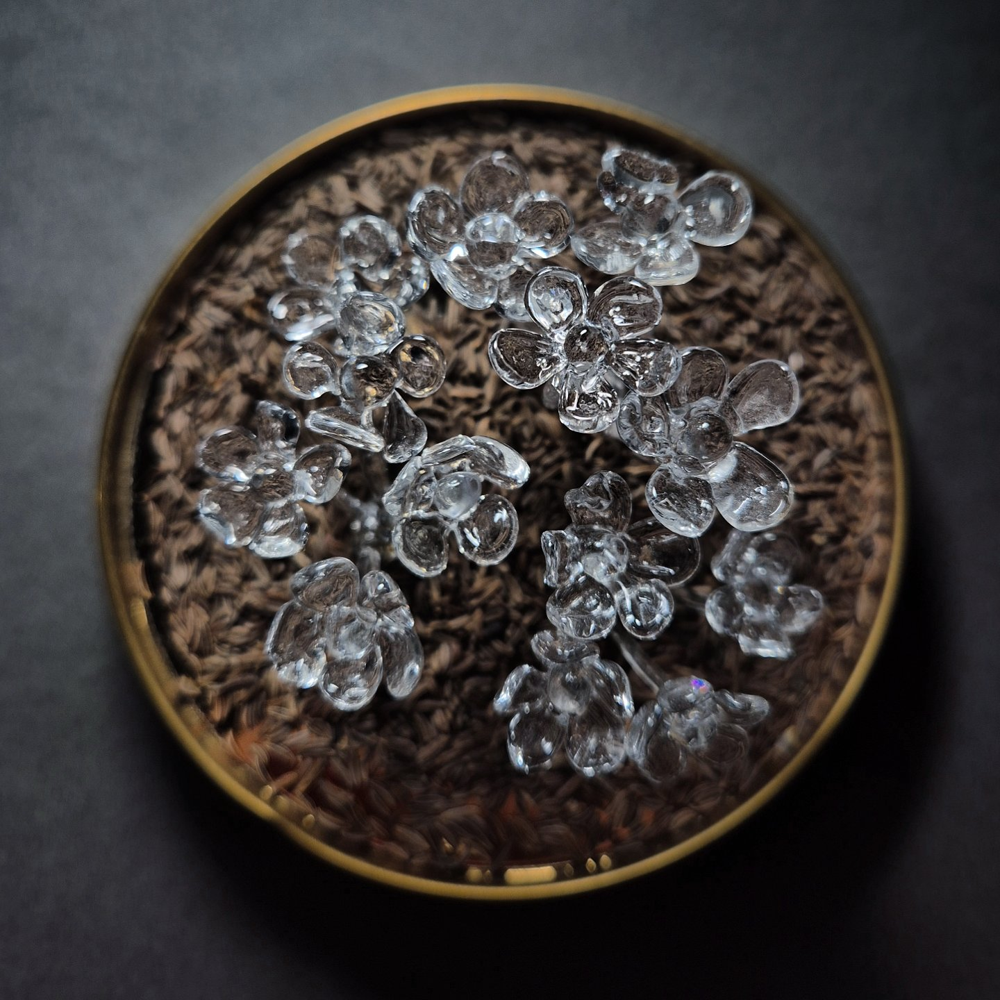
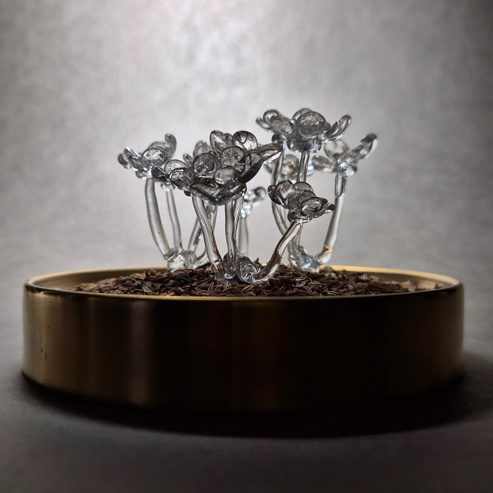
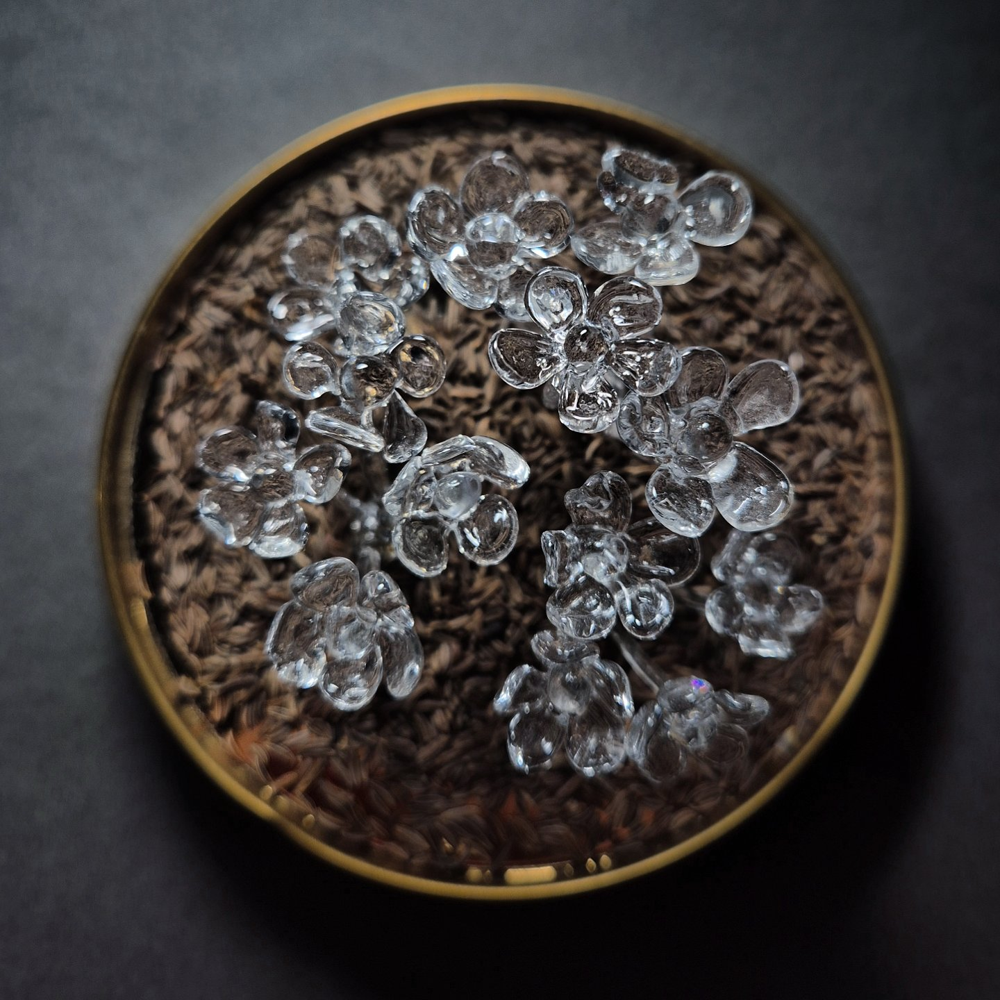
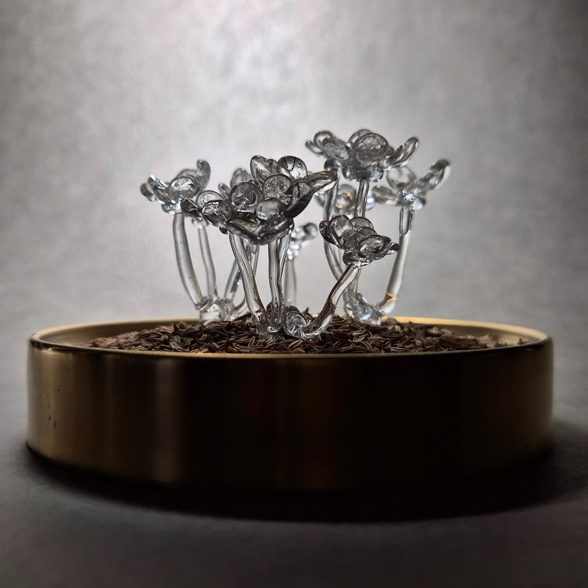

CARUM CARVI
Lucrarea explorează povestea fascinantă a chimenului, simbol al norocului și protecției. Inspirată din legenda tradițională care încurajează oamenii de a avea chimen în casă, pentru a atrage prosperitate și siguranță, piesa surprinde metamorfoza acestui ingredient miraculos. Fragilitatea sticlei face trimitere la fragilitatea vieții. Privitorul este incurajat să mediteze asupra frumuseții efemere și a puterii plantelor care aduc noroc și protecție în căminul nostru.
 


